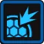
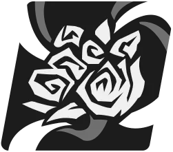
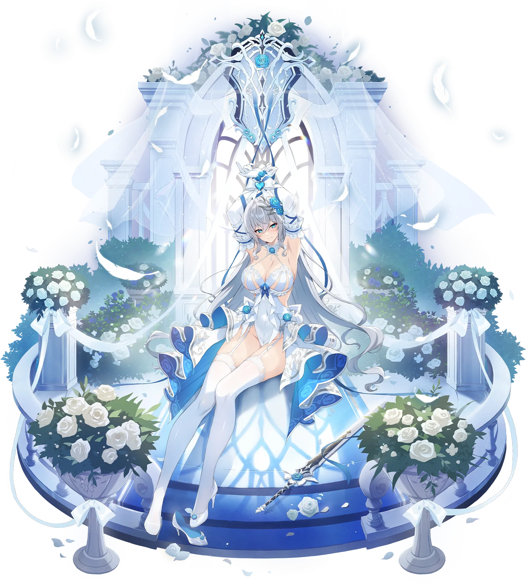

카르멘
SSR달서포터충격
모나스티르 공국 기사단의 부단장. 어떠한 어려운 상황에서도 언제나 여유로운 웃음을 잃지 않는 기사단의 방패.
기본 스테이터스 (Lv.200)
공격력
2,990
37위
생명력
20,220
2위
방어력
1,558
3위
속도
95
29위
치명타 확률
5%
17위
치명타 피해
50%
10위
효과 적중100%
효과 저항8%
명중률100%
여정 스테이터스
힘10
체력180
인내150
집중10
보호10
공명 잠재력
Lv.3생명의 감각
최대 생명력이 일정 비율만큼 소폭 증가합니다.
Lv.6방어의 감각
방어력이 일정 비율만큼 소폭 증가합니다.
Lv.10생명의 솜씨
최대 생명력이 2% 증가합니다.
맹약패시브
카르멘의 최대 생명력이 15% 증가합니다. 카르멘이 최초 전투 시작 시 자신을 제외한 공격력이 가장 높은 아군에게 사랑의 서약(해제불가)을 발생시킵니다. 사랑의 서약(해제불가) 상태인 아군이 단일 공격에 피격 시 해당 아군이 받는 피해의 40%를 자신이 대신 받고 자신의 행동 게이지를 30% 증가시킵니다. 피해량 분배 효과는 가장 높은 효과만 적용됩니다. 방해하지 마세요 사용 후 아군 전체의 생명력을 회복시키고 방해하지 마세요 사용 시 냉각이 최대 중첩이면 냉각을 모두 소거하고 회복량이 증가합니다. 회복량은 자신의 최대 생명력에 비례해 증가합니다.
회복 계수
생명력 계수 - 0.025
생명력 계수 - 0.025
사랑의 서약(해제불가) : 효과 저항이 20% 증가합니다. 부활 시에도 유지됩니다.
1카르멘이 최초 전투 시작 시 자신을 제외한 공격력이 가장 높은 아군에게 사랑의 서약(해제불가)을 발생시킵니다. 사랑의 서약(해제불가) 상태인 아군이 단일 공격에 피격 시 해당 아군이 받는 피해의 40%를 자신이 대신 받고 자신의 행동 게이지를 18% 증가시킵니다. 피해량 분배 효과는 가장 높은 효과만 적용됩니다. 방해하지 마세요 사용 후 아군 전체의 생명력을 회복시키고 방해하지 마세요 사용 시 냉각이 최대 중첩이면 냉각을 모두 소거하고 회복량이 증가합니다. 회복량은 자신의 최대 생명력에 비례해 증가합니다.
2카르멘의 최대 생명력이 5% 증가합니다. 카르멘이 최초 전투 시작 시 자신을 제외한 공격력이 가장 높은 아군에게 사랑의 서약(해제불가)을 발생시킵니다. 사랑의 서약(해제불가) 상태인 아군이 단일 공격에 피격 시 해당 아군이 받는 피해의 40%를 자신이 대신 받고 자신의 행동 게이지를 18% 증가시킵니다. 피해량 분배 효과는 가장 높은 효과만 적용됩니다. 방해하지 마세요 사용 후 아군 전체의 생명력을 회복시키고 방해하지 마세요 사용 시 냉각이 최대 중첩이면 냉각을 모두 소거하고 회복량이 증가합니다. 회복량은 자신의 최대 생명력에 비례해 증가합니다.
3카르멘의 최대 생명력이 10% 증가합니다. 카르멘이 최초 전투 시작 시 자신을 제외한 공격력이 가장 높은 아군에게 사랑의 서약(해제불가)을 발생시킵니다. 사랑의 서약(해제불가) 상태인 아군이 단일 공격에 피격 시 해당 아군이 받는 피해의 40%를 자신이 대신 받고 자신의 행동 게이지를 24% 증가시킵니다. 피해량 분배 효과는 가장 높은 효과만 적용됩니다. 방해하지 마세요 사용 후 아군 전체의 생명력을 회복시키고 방해하지 마세요 사용 시 냉각이 최대 중첩이면 냉각을 모두 소거하고 회복량이 증가합니다. 회복량은 자신의 최대 생명력에 비례해 증가합니다.
4카르멘의 최대 생명력이 15% 증가합니다. 카르멘이 최초 전투 시작 시 자신을 제외한 공격력이 가장 높은 아군에게 사랑의 서약(해제불가)을 발생시킵니다. 사랑의 서약(해제불가) 상태인 아군이 단일 공격에 피격 시 해당 아군이 받는 피해의 40%를 자신이 대신 받고 자신의 행동 게이지를 30% 증가시킵니다. 피해량 분배 효과는 가장 높은 효과만 적용됩니다. 방해하지 마세요 사용 후 아군 전체의 생명력을 회복시키고 방해하지 마세요 사용 시 냉각이 최대 중첩이면 냉각을 모두 소거하고 회복량이 증가합니다. 회복량은 자신의 최대 생명력에 비례해 증가합니다.
방해하지 마세요기본기
적 단일
좋은 시간을 방해받은 카르멘이 분노를 담아 적을 공격합니다. 자신에게 냉각 스택을 1개 부여합니다. 피해량은 자신의 최대 생명력에 비례해 증가합니다.
대미지 계수
공격력 계수 - 0.5
생명력 계수 - 0.035
공격력 계수 - 0.5
생명력 계수 - 0.035
 냉각 : 태양 속성 유닛에게 주는 피해량이 1% 증가합니다. 최대 5스택까지 적용됩니다. 부스트 효과는 강화/약화 효과와 무관하게 독립적으로 적용됩니다.
냉각 : 태양 속성 유닛에게 주는 피해량이 1% 증가합니다. 최대 5스택까지 적용됩니다. 부스트 효과는 강화/약화 효과와 무관하게 독립적으로 적용됩니다.노바 버스트타격 시 일시적으로 자신의 강인도 고정 피해가 1 증가하고 타격 후 현재 생명력 비율이 가장 낮은 아군의 생명력을 회복시킵니다. 회복량은 자신의 최대 생명력에 비례해 증가합니다.
1기본 효과
2피해량 1% 증가
3피해량 1% 증가
4피해량 1% 증가
5피해량 1% 증가
6피해량 1% 증가
7피해량 1% 증가
8피해량 1% 증가
9피해량 1% 증가
10피해량 2% 증가
수호의 기사특수기
3 턴반응형 아군 단일노바 획득 1
수호의 힘이 담긴 방패로 아군을 지켜냅니다. 사랑의 서약(해제불가) 상태인 아군이 피격 시 해당 아군에게 수호의 기사를 발동합니다. 아군 대상의 생명력을 회복시키고 2턴 간 보호막을 발생시킨 후 자신과 아군 대상의 행동 게이지를 30% 증가시킵니다. 자신에게 냉각 스택을 2개 부여합니다. 회복량과 보호막은 자신의 최대 생명력에 비례해 증가합니다.
회복 계수
생명력 계수 - 0.15
보호막 계수
생명력 계수 - 0.2
생명력 계수 - 0.15
보호막 계수
생명력 계수 - 0.2
수호 : 아군이 받는 피해의 30%를 자신이 대신 받습니다. 피해량 분배 효과는 가장 높은 효과만 적용됩니다.

보호막 : 피해를 받을 때 생명력을 대신해 정해진 수치만큼 피해를 흡수합니다. 냉각 : 태양 속성 유닛에게 주는 피해량이 1% 증가합니다. 최대 5스택까지 적용됩니다. 부스트 효과는 강화/약화 효과와 무관하게 독립적으로 적용됩니다. 사랑의 서약(해제불가) : 효과 저항이 20% 증가합니다. 부활 시에도 유지됩니다.
1기본 효과
2회복량 2% 증가
3회복량 2% 증가
4행동 게이지 증가량 5% 증가
5회복량 3% 증가
6쿨타임 1턴 감소
7회복량 3% 증가
8행동 게이지 증가량 10% 증가
9회복량 5% 증가
10회복량 5% 증가

웨딩 마치궁극기
5 턴아군 단일노바 획득 1
카르멘이 자신의 부케를 던지고 아군을 지원합니다. 자신에게 냉각 스택을 3개 부여합니다. 아군 대상의 약화 효과를 모두 해제하고 생명력을 회복시킵니다. 아군 대상이 달 속성이라면 해당 아군에게 냉각 스택을 3개 부여합니다. 회복량은 자신의 최대 생명력에 비례해 증가합니다.
회복 계수
생명력 계수 - 0.23
생명력 계수 - 0.23
냉각 : 태양 속성 유닛에게 주는 피해량이 1% 증가합니다. 최대 5스택까지 적용됩니다. 부스트 효과는 강화/약화 효과와 무관하게 독립적으로 적용됩니다.노바 버스트스킬 사용 후 자신의 강인도를 1 회복합니다.
1기본 효과
2회복량 1% 증가
3회복량 2% 증가
4회복량 2% 증가
5회복량 2% 증가
6쿨타임 1턴 감소
7회복량 2% 증가
8회복량 3% 증가
9회복량 3% 증가
10회복량 5% 증가
생일08월 11일
신장168cm
출신모나스티르 공국
소속모나스티르 기사단
CV (KR)손정민
CV (JP)Lynn
